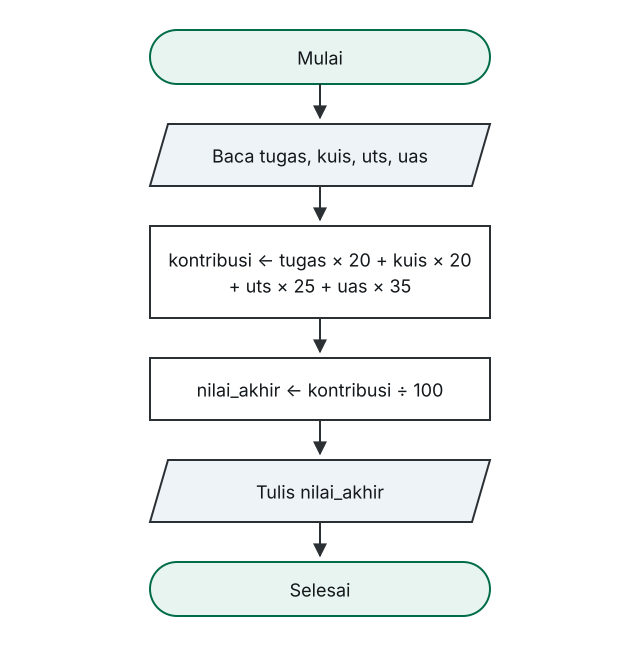

Universitas Ahmad Dahlan Aceh · Fakultas Sains dan Teknologi
Algoritma dan Pemrograman I · INFUAD-003 · 2 SKS · Program Studi Informatika (S1)
Pekan 7
Yang kita lakukan adalah memakai seluruh materi pekan 1 sampai 6 pada satu masalah utuh.
Bagian 01
Langkah yang paling sering dilewati, padahal paling menentukan.
Yang diminta
| Komponen | Bobot |
|---|---|
| Tugas | 20% |
| Kuis | 20% |
| UTS | 25% |
| UAS | 35% |
Setiap komponen bernilai 0–100. Hasil akhirnya pada skala 0–100.
Bagian 02
Enam pekan, satu masalah.
Peta materi
| Pekan | Materi | Perannya |
|---|---|---|
| 2 | Computational thinking | Memecah masalah |
| 3 | Pseudocode | Menuangkan langkah |
| 4 | Flowchart | Memeriksa alur |
| 5 | Konsep data | Menentukan tipe |
| 6 | Operator dan ekspresi | Menyusun perhitungan |
Bagian 03
Kembali ke cara berpikir pekan 2.
Langkah 1
Bagian 04
Materi pekan 5 yang menentukan hasil akhirnya.
Langkah 2
| Variabel | Tipe | Alasan |
|---|---|---|
| tugas, kuis, uts, uas | integer | Bilangan bulat 0–100 |
| kontribusi | integer | Penjumlahan bilangan bulat |
| nilai_akhir | real | Pembagian bisa berpecahan |
Alasannya
kontribusi → integer
Bilangan bulat dikalikan dan dijumlahkan dengan bilangan bulat menghasilkan bilangan bulat. Tidak ada alasan membuatnya real.
nilai_akhir → real
Pembagian hampir selalu menghasilkan pecahan — dan justru bagian pecahan itu yang penting dalam penilaian.
Bagian 05
Materi pekan 3 dan 6 digabungkan.
Langkah 3
DEKLARASI tugas, kuis, uts, uas : integer kontribusi : integer nilai_akhir : real BEGIN READ tugas, kuis, uts, uas kontribusi ← tugas × 20 + kuis × 20 + uts × 25 + uas × 35 nilai_akhir ← kontribusi ÷ 100 WRITE nilai_akhir END
Kalau terasa terlalu padat
kontribusi ← tugas × 20 + kuis × 20 kontribusi ← kontribusi + uts × 25 + uas × 35
Baris kedua memakai nilai kontribusi yang baru saja dihitung. Ini sah: penugasan bekerja dari kanan ke kiri.
Bagian 06
Materi pekan 4 dipakai untuk memeriksa.
Langkah 4

Cara memeriksa
Yang dihitung
Hasilnya
5 simbol. Kalau jumlahnya berbeda, ada langkah yang terlewat atau tergabung.
Bagian 07
Kesalahan tipe dan urutan paling cepat ketahuan di sini.
Langkah 5
| Baris | tugas | kuis | uts | uas | kontribusi | nilai_akhir |
|---|---|---|---|---|---|---|
| 1 | 80 | 75 | 70 | 85 | — | — |
| 2 | 80 | 75 | 70 | 85 | 7825 | — |
| 3 | 80 | 75 | 70 | 85 | 7825 | 78.25 |
Baris kedua, dirinci
| Komponen | Perhitungan | Kontribusi |
|---|---|---|
| Tugas | 80 × 20 | 1600 |
| Kuis | 75 × 20 | 1500 |
| UTS | 70 × 25 | 1750 |
| UAS | 85 × 35 | 2975 |
| Jumlah | 7825 |
7825 ÷ 100 = 78,25 — sama dengan contoh di catatan pekan 2.
Bagian 08
Kebiasaan berpikir yang membedakan program yang jalan dan program yang bisa dipakai.
Variasi 1
DEKLARASI tugas, kuis, uts : integer kontribusi : integer total_bobot : integer nilai_akhir : real BEGIN READ tugas, kuis, uts kontribusi ← tugas × 20 + kuis × 20 + uts × 25 total_bobot ← 20 + 20 + 25 nilai_akhir ← kontribusi ÷ total_bobot WRITE nilai_akhir END
Perubahannya kecil, tetapi algoritmanya kini tetap benar meski komposisi bobotnya berubah.
Variasi 2 — masalah lain, bentuk sama
DEKLARASI hadir : integer total_pertemuan : integer persentase : real BEGIN READ hadir, total_pertemuan persentase ← hadir × 100 ÷ total_pertemuan WRITE persentase END
Bentuknya sama: kalikan dengan pembanding, lalu bagi dengan totalnya.
Batas yang jujur
Mengubah nilai angka menjadi huruf mutu memerlukan program untuk memeriksa batas nilai dan memilih hasil yang berbeda.
Itu percabangan — dan alatnya baru kita pelajari di pekan 9. Setelah itu, kasus ini akan kita lengkapi.
Hindari
Pekan depan
Seluruhnya masih runtunan — belum ada percabangan dan pengulangan.
Tanpa jawaban benar atau salah
Dua soal lagi tersedia di catatan kuliah.
Terima kasih
Tidak ada materi baru hari ini — yang baru adalah cara memakainya bersama-sama.